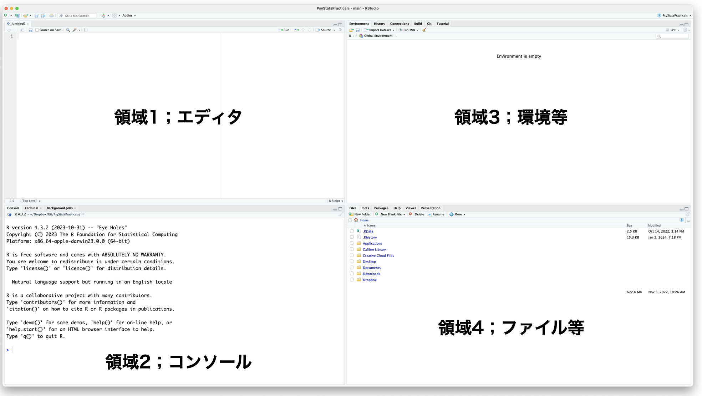
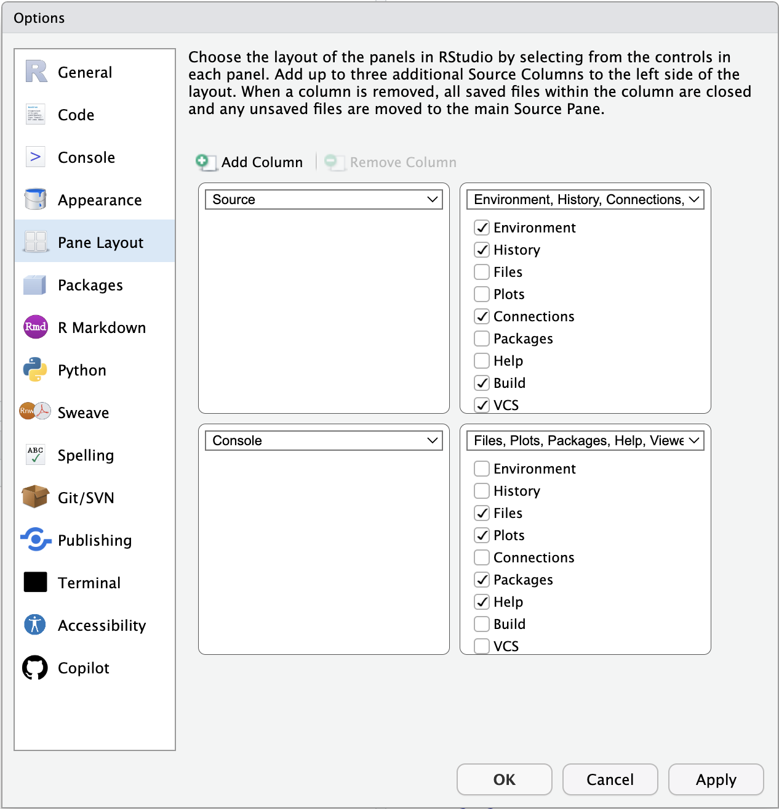

1 はじめようR/RStudio
「R」。この一文字で表現されるがゆえに，検索しにくいことこの上ないそれは，統計に特化したプログラミング言語であり，心理学はもちろん統計に関する学問領域で多岐にわたって利用されているものである。フリーソフトウェア，すなわち自由で開かれているソフトウェアであるから，ソースコードに至るまで公開されており，誰でも無償で利用できる。無償すなわち無料ではない。補償がないので無償なのだが，逆に金銭で計算をはじめ科学的真実性が保証されるわけではない，という至極まともな考え方は理解できるだろう。科学はもちろん，ソフトウェアも人類の共有財産として，オープンに育んでいこう。
Rはコミュニティ活動も盛んで，Tokyo.Rを中心に日本の各地でRユーザからなる自主的な勉強会が開催されている1。またR自体がインターネットを通じて公開されているように，導入から応用までさまざまな資料がオンラインで活用できる。以下では導入から解説していくが，頻繁にアップデートされるものでもあるので，必要に応じて検索し，なるべく時系列的に近い情報を吟味して活用することを薦める。
1.1 環境の準備
1.1.1 Rのインストール
Rのインストールに関して，初心者でも利用可能な資料がオンラインで公開されている。
RはThe Comprehensive R Archive Network，通称CRAN2というネットワークで公開されている。CRANのトップページにはダウンロードリンクが用意されており，自分のプラットフォームにあった最新版をダウンロードしよう3。
1.1.2 RStudioのインストール
Rのインストールが終われば，次はRStudioをインストールしよう。 RStudioは総合開発環境(IDE)と呼ばれるものである。Rは単体で，統計の分析や関数の描画など，専門的な利用に耐えうる分析機能を有している。その本質はもちろん計算機能であって，計算を実行する命令文(スクリプト)を与えれば，必要な返答をあたえてくれる。このように分析の本質が計算機能であったとしても，実際の分析活動に際しては，スクリプトの下書きと清書，入出力データや描画ファイルの生成・管理，パッケージ(後述)の管理など，分析にまつわるさまざまな周辺活動が含まれる。喩えるなら料理の本質が包丁・まな板・コンロによる加工であったとしても，実際の調理に際しては，広い調理スペースや使いやすいシンク，ボウルやタッパーなどの補助的な調理器具があった方がスムーズにことが進む。 いわば，R単体で分析をするのは飯盒炊爨のような必要最低限かつワイルドな調理法であり，RStudioは総合的な調理環境を提供してくれるものなのである。
繰り返しになるが，本質的にはR単体で作業が可能である。なるべく単純な環境を維持したいというのであればR単体での利用を否定するものではないが，RStudioはエディタや文書作成ソフトとしても有用であるので，本授業ではRStudioを使うことを前提とする4。
1.1.3 環境の準備に関する導入サイト
以下に執筆時点(2024年1月)で参照可能な，導入に関するWeb教材を挙げておく。自分に合ったものを適宜参照し，RとRStudioを自身のPC環境に導入してほしい。もちろん自身で「R RStudio インストール」などとして検索しても良いし，chatGPTに相談しても良い。
1.1.3.1 For Windows
- 東京大学・大学院農学生命科学研究科アグリバイオインフォマティクス教育研究プログラムによるPDF資料
- 初心者向けRのインストールガイド
- 関西学院大学商学部土方ゼミ資料
- 多摩大学情報社会研究所・応用統計学室資料
- 奥村 晴彦先生のページ
1.1.3.2 For Macintosh
なお，Macの場合はHomebrewなどのパッケージ管理ソフトを使って導入することもできる(し，そのほうがいい)。その場合は以下の資料を参照。
1.2 RStudioの基礎（４つのペイン）
ここまでで，RおよびRStudioを利用する準備が整っているものとする。
さて，RStudioを起動すると大きくわけて4つの領域に分かれた画面が出てくる。この領域のことをペインと呼ぶ。図中の「領域1」がないように見えるときもあるが，下のペインが最大化され折りたたまれているだけなので，ペイン上部のサイズ変更ボタンを操作することで出てくるだろう。

このペインのレイアウトは，メニューのTools > Global Options… > Pane Layoutから変更することもできる。基本的に4分割であることに変わりはないが，自分が利用しやすい位置にレイアウトを変更するとよい。

以下，各ペイン(領域)が何をするところかを簡単に解説する。
1.2.1 領域1；エディタ・ペイン
エディタ領域。Rのスクリプトはもちろん，レポートの文章など，基本的に入力するときはこのペインに書く。ここで作業するファイルの種類は，File > New Fileから見ると明らかなように，R言語だけでなくC言語，Python言語などのスクリプトや，Rmd，md,Qmd,HTMLなどのマークアップ言語，StanやSQLなど特殊な言語などにも対応している。ペインの右下に現在開かれているファイルの種類が表示されているのを確認しておこう。
R言語でスクリプトを書く例で解説しよう。Rは命令を逐次実行していくインタプリタ形式であり，ここに記述されたRコードを，右上のRunボタンでコンソールに送って計算を実行するように使う。一回の命令をコマンド，コマンドが積み重ねられた全体をスクリプト，あるいはプログラムと呼ぶ。複数のコマンドを実行したい場合は，エディタ領域で複数行選択してRunボタンを，スクリプトファイル全体を実行したいときはRunボタンのとなりにあるSourceを押す。CTRL+Enter(Macの場合はコマンド+Enter)でRunボタンのショートカットになる。
1.2.2 領域2；コンソール・ペイン
R単体で利用する場合は，ここのペインだけを利用するようなものである。すなわち，ここに示されているのがR本体というか，Rの計算機能そのものである。ここに「＞」の記号が表示されているところをプロンプトといい，プロンプトが表示されているときはRが入力待ちの状態である。
Rは逐次的に計算を行うので，プロンプトのある状態でコマンドを入力すると計算結果が返される。 ここに直接コマンドを書いて行っても良いが，書き間違えたりすることもあるし，コマンドが複数行に渡ることが一般的になってくるので，エディタ領域に清書するつもりで記述していったほうがよい。ごくたまに，一時的に確認したいことがある時だけ，直接コンソールを触るようにすると良い。
なお，コンソールを綺麗にしたいときは右上の箒ボタンをおすとよい。
1.2.3 領域3；環境ペイン
基本的にこのペインと次の領域4のペインは複数のタブが含まれる。Pane Layoutでどちらにどのタブを含めるかを自分好みにカスタマイズすることもできる。ここでは代表的な2つのタブについてのみ言及する。
Environmentタブは，Rの実行メモリ内に保管されている変数や関数などが表示されている。「変数や関数など」をまとめてオブジェクトというが，ここで内容や構造をGUIで確認することができる。
Historyタブは履歴である。これまでコンソールに送られてきたコマンドが順に記録されている。Historyタブからエディタ，コンソールにコマンドを送ることも可能であり，「さっきの命令をもう一度実行したい」といったときに参照すると良い。
1.2.4 領域4；ファイルペイン
ここでも代表的なタブについてのみ解説する。
FilesタブはMacでいうFinder，Windowsでいうエクスプローラーのような，ファイル操作画面である。フォルダの作成，ファイルの削除，リネーム，コピーなどの操作が可能である。
PlotタブはRコマンドで描画命令が出された時の結果がここに表示される。RStudioの利点の一つは，このPlotから図をファイルにExportすることが可能であり，その際にファイルサイズやファイル形式を指定できるところにある。
Packagesタブは読み込まれているパッケージ，(読み込まれていないが)保管しているパッケージのリストが表示されている。新しくパッケージを導入するときも，ここのinstallボタンから可能であり，保管しているパッケージのアップデートもボタンひとつで可能である。なお，パッケージについては後ほど言及する。
HelpタブはRコマンドでヘルプを表示する命令(help関数)が実行された時の結果が表示される領域である。ヘルプを使うことで関数の引数，戻り値，使用例などを参照できる。
1.2.5 そのほかのタブ
そのほか，表示の有無もオプションになっているようないくつかのタブについて，簡単に解説しておく。
ConnectionsタブはRを外部データベースなどに繋げるときに参照する。大規模データをローカルにすべて取り込むことなく，SQLで必要なテーブルだけ取り出すといった操作をする際は必要になってくるだろう。
GitタブはR，とくにRプロジェクト(後述)のバージョンを管理するときに利用する。Gitとは複数のプログラマによって同時並行的にプログラムを作っていく時の管理システムである。時系列的な差分の記録を得意とするシステムなので，レポートの作成時などに応用すればラボノートの記録としても利用できる。
BuildタブはRパッケージやWebサイトを構築するときに利用する。なおこの資料もRStudioを利用して作られており，資料を生成(原稿からHTMLやPDFにする)ときにはこのタブを利用している。
Tutorialタブはチュートリアルツアーを楽しむ時のタブである。
ViewerタブはRStudioで作られたHTMLやPDFなどを見るためのタブである。
PresentationタブはRStudioで作られたプレゼンテーションを見るためのタブである。
TerminalタブはWindows/MacでいうTerminal，Linuxでいう端末についてのタブであり，Rに限らず，コマンドラインを通じてOSに命令するときに使う。
Background Jobsタブはその名の通りバックグラウンドで作業をさせるときに利用する。Rは基本的にシングルコアで計算が実行されるが，このタブを使ってスクリプトファイルをバックグラウンドで実行することで並列的に作業が可能になる。
1.3 Rのパッケージ
Rは単体でも線型モデルなどの基本的な分析は可能であるが，より進んだ統計モデルを利用したい場合は専門のパッケージを導入することになる。パッケージとは関数群のことであり，これもCRANやGithubなどインターネットを介して提供されている。ちなみに提供されているパッケージは，CRANで公開されているものだけで344,607件あり5，Github6で公開されているものなど，CRANを介さないパッケージも少なくない。
パッケージを利用する際は，まずローカルにパッケージファイルをインストールしなければならない。その上で，Rを起動するごとに(セッションごとに)，関数libraryでパッケージを呼び出して利用する。インストールを毎回行う必要はないことに注意。
インストールはRのコマンドでも可能だが，RStudioのPackagesペインを使って導入するのが簡単だろう。以下に，一部の有名かつ有用なパッケージ名とその簡単な説明を挙げる。本講義の中で使うものもあるので，事前に準備しておくことが望ましい。
- tidyverseパッケージ(Wickham et al. 2019)；Rが飛躍的に使いやすくなったのは，このtidyverseパッケージ導入以後のことである。開発者のHadley WickhamはR業界で神と崇められており，R業界に与えたインパクトは大きい。このパッケージは「パッケージ群」「パッケージのパッケージ」であり，tidyverseとはtidyな(整然とした)verse(世界)というような意味合いである。このパッケージは統計分析モデルを提供するものではなく，その前のデータの前処理に関する便利な関数を提供する7。このパッケージをインストールすると，関連する依存パッケージが次々取り込まれるので，少々時間がかかる。
- psychパッケージ(Revelle 2021)；名前の通り，心理学統計に関する統計モデルの多くが含まれている。特に特殊な相関係数や，因子分析モデルなどは非常に便利なので，インストールしておいて間違いない。
- GPArotationパッケージ(Bernaards and Jennrich 2005)；因子分析における因子軸の回転に使うパッケージ。
- stylerパッケージ；スタイルを整えてくれるパッケージ。スクリプトの清書に便利。
- lavaanパッケージ(Rosseel 2012)；潜在変数を含んだモデル(LAtent VAriable ANalysis)の分析，要するに構造方程式モデリング(Structural Equation Modeling;SEM，共分散構造分析ともいう)を実行するパッケージ。
- ctvパッケージ(Zeileis 2005); CRAN Task Viewsの略で，膨大に膨れ上がったCRANから必要なパッケージを見つけ出すのは困難であることから，ある程度のジャンルごとに関連しそうなパッケージをまとめて導入してくれるのがこのパッケージ。例えば，このパッケージをインストールした後で，
install.views("Psychometrics")とすると，心理統計関係の多くのパッケージを次々導入してくれる。 - cmdstanrパッケージ(Gabry, Češnovar, and Johnson 2023)；複雑な統計モデルで利用される，確率的プログラミング言語stanをRから使うことができるようになるパッケージ。導入にはこのパッケージの他にもstanやコンパイル環境の準備が必要なので，公式の導入サイトも参考にしてほしい。
1.4 RStudioのプロジェクト
実際にRを使っていく前に，最後の準備としてRStudioにおけるプロジェクトについて解説しておく。
みなさんも，PCをつかって文書を作ったり保管したりするときに，フォルダにまとめて入れておくことがあるだろう。フォルダは例えば「文書」>「心理学」>「心理学統計演習」のように階層的に整理することが一般的で，そうしておくことで必要なファイルをすぐに取り出すことができる。
逆に言えば，こうしたフォルダ管理をしておかなければファイルがPCのなかで散乱してしまい，必要な情報を得るために逐一PCの中身を検索しなければならないだろう。
R/RStudioをつかった分析実践の場合も同様で，一回のテーマについて複数のファイル(スクリプトファイル，データファイル，画像ファイル，レポートなど文書ファイル等々)があり，シーンに合わせて(例えば「授業」「卒論」など)フォルダで管理することになる。
さらに，PC環境には作業フォルダ(Working Directory)8という概念がある。たとえばR/RStudioを起動・実行しているときに，Rが「今どこで」実行されているか，どこを管理場所としているか，を表す概念である。例えばこの作業フォルダの中にsample.csvというファイルがあって，それをスクリプト上から読み込みたい，というコマンドを実行するのであれば，そのままファイル名を書けば良い。しかし別の場所にそのファイルが保存されているのなら，作業フォルダから見た相対的な位置を含めて指示してやるか(相対パス)，あるいはPC環境全体からみた絶対的な位置を含めて(絶対パス)指示してやる必要がある。相対・絶対パスの違いは，「ここから二つ目の角を右」のように指示するか，住所で指示するかの違いであると考えれば良い。
ともあれ，この作業フォルダがどこに設定されているかは，実行するときに常に気にしていなければならない。ちなみにこの作業フォルダは，RStudioのファイルペイン・Filesタブでひらいているところとは限らないことに注意してほしい。GUI上でエクスプローラ/Finderで開いたからといって，作業フォルダが自動的に切り替わるようにはなっていない。
そこでRStudioのプロジェクトである。RStudioには「プロジェクト」という概念があり，作業フォルダや環境の設定などをそこで管理することができる。新しくプロジェクトを始めるときはFile>New Project，すでに一度プロジェクトを作っているときはFile > Open Projectとしてプロジェクトファイル(拡張子が.projのファイル)を開くようにする。そうすると，作業フォルダが当該フォルダに設定される。プロジェクトをGitに連携しておくとバージョン管理などもフォルダ単位で行える。
以後，本講義で外部ファイルを参照する場合，プロジェクトフォルダの中にそのファイルがあるものとして(パスを必要としない形で)論じるので注意されたし。
1.5 課題
- Rの最新版をCRANからダウンロードし，自分のPCにインストールしてください。
- RStudioのDesktop版をPosit社のサイトからダウンロードし，自分のPCにインストールしてください。
- RStidoを起動し，ペインレイアウトをデフォルトではない状態に並べ直してみてください。ソースペインを3列にするのも良いでしょう。
- コンソールペインに書かれている文字を全て消去してみてください。
- ファイルペインにあるFilesタブをつかって，色々なフォルダを開けてみたり，不要なファイルを削除したり，ファイル名を変更したりしてみてください。
- ファイルペインにあるFilesタブを開き，
MoreのところからGo To Working Directoryを選択・実行してください。何か起こったでしょうか。 - この授業のために，新しいプロジェクトを作成してください。プロジェクトは新しいフォルダでも，既存のフォルダでも構いません。
- プロジェクトが開いた状態のとき，RStudioのウィンドウ・タブのどこかに「プロジェクト名」が表示されているはずです。確認してください。
- またファイルペインのFilesタブから，色々なファイル操作をした上で，改めて
Go To Working Directoryをしてください。プロジェクトフォルダの中に戻ってこれたら成功です。 - 新しいRスクリプトファイルを開き，空白のままで結構ですからファイル名をつけて保存してください。
- RStudioを終了あるいは最小化させ，OSのエクスプローラ/Finderから，プロジェクトフォルダに移動してください。先ほど作ったファイルが保存されていることを確認してください。
- プロジェクトフォルダには，プロジェクト名+
.projというファイルが存在するはずです。これを開いて，RStudioのプロジェクトを開いてください。 - RStudioのFile > Close Projectからプロジェクトを閉じてください。画面の細部でどこが変わったか，確認してください。
- RStudioを終了し，再びRStudioを起動してください。起動の方法はプロジェクトファイルからでも，アプリケーションの起動でも構いません。起動後に，プロジェクトを開いてください(あるいはプロジェクトが開かれていることを確認してください。)。
2024年1月現在で，TokyoだけでなくFukuoka，Sapporo，Yamaguchi，Irumaなどで地方コミュニティがあり，参加者みんなで楽しまれている。↩︎
CRANは「しーらん」，あるいは「くらん」と発音される。筆者はしーらん派。↩︎
この授業のために自身のPCにRをインストールしたとして，次に使うときに半年以上間隔が空いたのなら，改めて最新版をチェックし，バージョンが上がっていたら旧版をアンインストールして最新版をインストールするところから始めた方が良い。Rで利用するパッケージなどが新しい版にしか対応していないことなどもある。Rと畳は新しい方が良い。↩︎
VSCodeのようなエディタから使うことも可能であるし，Jupyter Notebookの計算エンジンをRにすることも可能。最近では分析ソフトウェアを個々人で準備せず，環境として提供することも一般的になってきており，例えばGoogle ColaboratoryのエンジンをRにすることもできるようになっている。ローカルPCに自前の環境を作るということが，時代遅れになる日も近いかもしれない。↩︎
2024年01月18日調べ↩︎
Gitはバージョン管理システムであるが，これをインターネット上のサーバ(レポジトリ)で行うものをGithubという。RStudioはGithubとも連携しており，プロジェクトをGithubと紐づけることで簡単にバージョン管理ができる。しかもここで言及しているように，Github上でパッケージを公開することもできるので，最近はCRANの校閲を待たずに公開できるGithubが好まれている側面もある。↩︎
実は統計データの解析にかかる時間のほとんどが，解析に適切な形にデータを整形する「前処理」に費やされる。前処理，別名データハンドリングをいかに上手く，素早く，直感的にできるかは，その後の分析にも影響するほど重要な手順であるため，tidyverseパッケージの登場はありがたかった。これを使ったデータハンドリングだけの専門書 松村 et al. (2021) が重宝されるほどである。↩︎
ここでは，フォルダとディレクトリは同じ意味であると思ってもらって良い。一般に，CUIではディレクトリ，GUIではフォルダという用語が好まれる。語幹directにあるように，ファイルやアクセス先など具体的な指し示す先を強調しているのがディレクトリであり，それにファイル群などまとまった容れもの，という意味を付加したのがフォルダである。フォルダの方が言葉としてわかりやすいし。↩︎